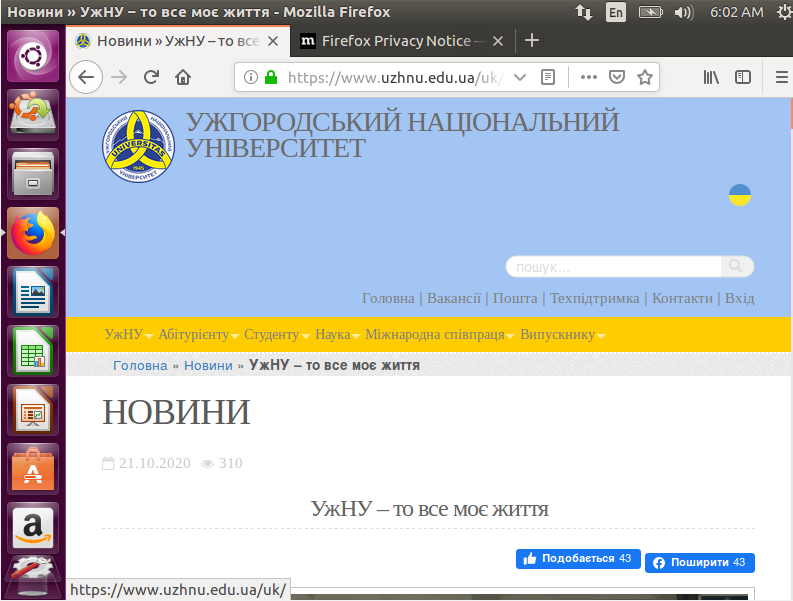

Тема: Встановлення Linux на Oracle VM VirtualBox.
Мета: ознайомитися з операційною системою Linux
- I.Дати визначення поняттям: Host operating system, guest OS, virtual machine, VirtualBox, operating system, Open virtualization format.
- II.Визначити види віртуальних машин та продемонструвати їх вигляд.
- III.Описати етапи створення віртуальної машини.
- IV.Визначити методи запуску віртуальної машини.
- V.Визначити методи запуску віртуальної машини.
- VI.Зробити клон віртуальної машини.
- VII.Визначити, скільки клонів можна встановити на власний ПК.
- Перевірити працездатність встановленого Linux. Вигляд Інтернет браузера з встановленого Linux зображено на рисунку 1
